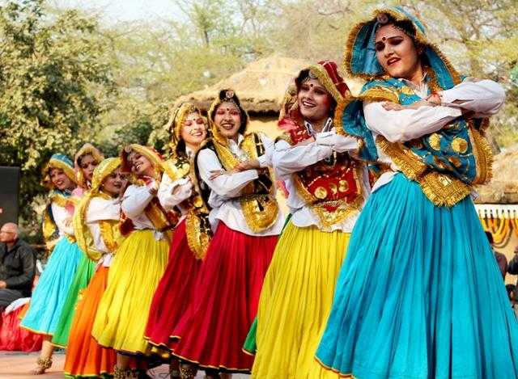
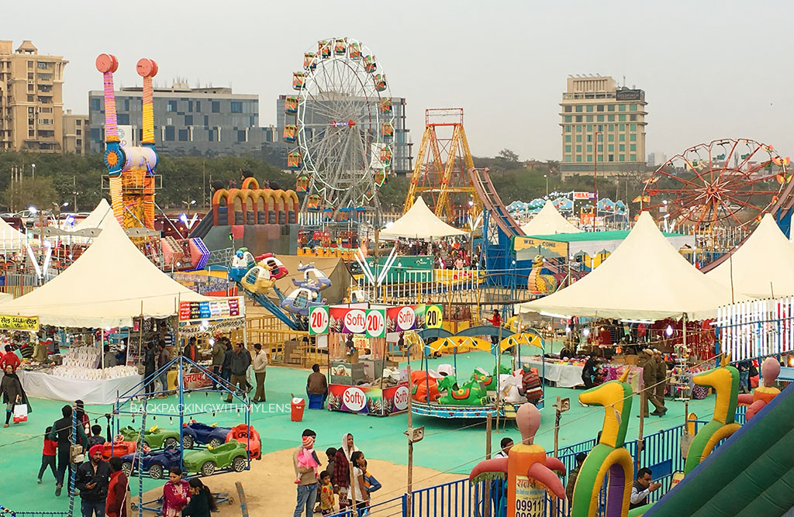
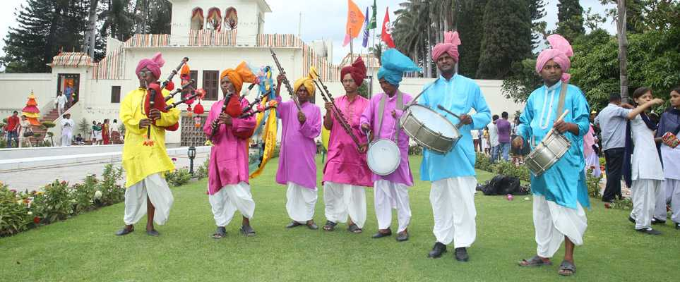
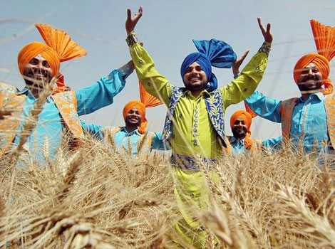
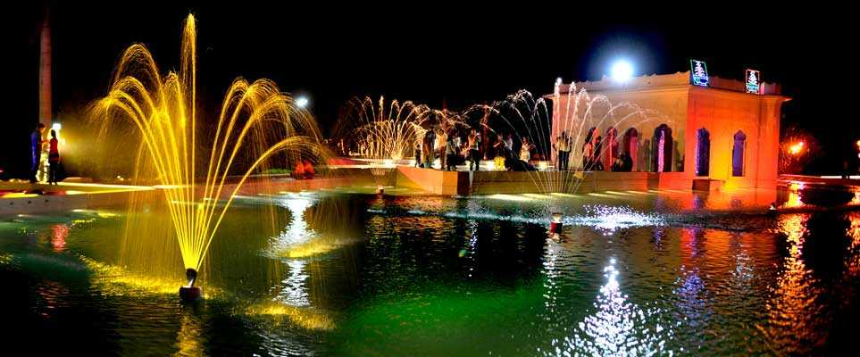
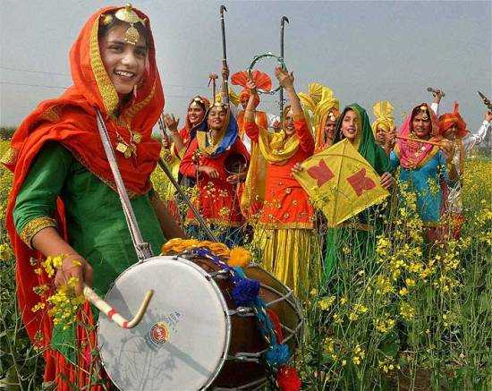
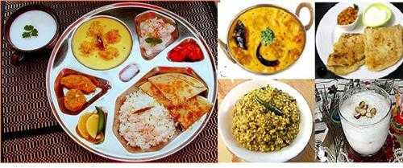
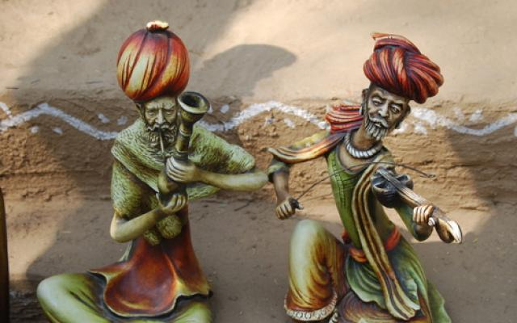
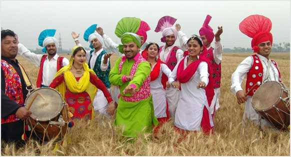

Haryana
Haryana is an Indian state located in the northern part of the country. It was carved out of the former state of East Punjab on 1 Nov 1966 on a linguistic basis. It is ranked 21st in terms of area, with less than 1.4% (44,212 km2 or 17,070 sq mi) of India's land area. The state capital is Chandigarh, which it shares with the neighboring state of Punjab, and the most populous city is Faridabad, which is a part of the National Capital Region. The city of Gurugram is among India's largest financial and technology hubs.[6] Haryana has 6 administrative divisions, 22 districts, 72 sub-divisions, 93 revenue tehsils, 50 sub-tehsils, 140 community development blocks, 154 cities and towns, 7,356 villages, and 6,222 villages panchayats. Haryana contains 32 special economic zones , mainly located within the industrial corridor projects connecting the National Capital Region.Gurgaon is considered one of the major information technology and automobile hubs of India. Haryana ranks 11th among Indian states in human development index. The economy of Haryana is the 13th largest in India, with a gross state domestic product (GSDP) of ₹7.65 trillion (US$96 billion) and has the country's 5th-highest GSDP per capita of ₹240,000 (US$3,000). The state is rich in history, monuments, heritage, flora and fauna and tourism, with a well-developed economy, national highways and state roads. It is bordered by Punjab and Himachal Pradesh to the north, by Rajasthan to the west and south, while river Yamuna forms its eastern border with Uttar Pradesh. Haryana surrounds the country's capital territory of Delhi on three sides (north, west and south), consequently, a large area of Haryana state is included in the economically important National Capital Region of India for the purposes of planning and development.
Culture of Haryana
Haryana's culture is reflective of its folklore. Submerged in the rich cultural heritage of the Vedic Period, the mystical state of Haryana stands out from the crowd. The rich Haryanvi culture is characterised by the hookahs and the charpoys, the vivid fairs and the swaying paddy fields; Haryana is one of the wealthiest states in India and is one of the most economically developed regions in South Asia. Popularly known as 'The Home of Gods', this vibrant state has a bountiful culture, heritage, festivals, folklores and a vibrant landscape. Some indispensable components of Haryana Culture are:

Haryana has emerged through the ravages of times and has still managed to hold on to many of its traditions- some good and some not so good. The people of Haryana strictly adhere to their customs and cultural traditions. Yoga and chanting of Vedic mantras have become an innate part of their lifestyle. The dialect of Haryana, popularly known as Haryanvi, Bangaru or Jatu; is known to be a bit crude but is full of earthy humour and straightforwardness. Most of the people of Haryana have more or less equal social status. The factor of age is a really dominating trait in Haryana, as all elders, whether rich or poor are treated with utmost respect and honour. Thus, it displays a very socialistic nature. In some parts of the state, the economic status of an individual is also determined by the number of cattle he owns! People here tend to retain their racial purity by not allowing marriages in the same gotra. Widow Remarriages are also not encouraged and it is hence a very big obligation to the community. Apart from all the vibrant and earthy customs of Haryana, there are a lot of practices here which needs amendment at the earliest. The major among them are the denial of education to the girl child, female infanticide and practice of the purdah.
Surajkund International Fair
This fair set up in the suburbs of Faridabad every year is a heaven for craft and handloom lovers. With the splash of colours and the rhythm of the drum beats, this fair beautifully portrays the rural part of Haryana culture and is a super success every year. Adorned with multi-cuisine food courts and different adventure and amusement rides, this mela is attended by thousands of people from nearby places.
Mango Mela
Organized in the months of June and July at 'Yadavindra Gardens' of Pinjore, this mela is a great treat for the mango lovers. The Mango Mela does not only quenches the people's desires o the different variety of mangoes but also offers a forum to support the farmers to sell their mangoes and teach them about the latest technology to raise their mango production.

Baisakhi Mela
Hosted by the Haryana Tourism on 13-14th April at Pinjore Gardens every year, this fair commemorates the festival of Baisakhi. A plethora of visitors gather for the celebrations with great enthusiasm and frolic.
Pinjore Heritage Festival
This festival is celebrated every year in the month of December to celebrate the vibrant and rich culture of Haryana. Poets, singers and dancers perform their art forms here. This is a great annual event that focuses on the history and heritage of old Pinjore town and its magnificent gardens.

Festivals of Haryana
To celebrate various occasions and events, a number of vibrant festivals take place in Haryana. These festivals include Teej, Guga Navmi, Gita Jayanti, Kaartik Cultural Festival and a unique celebration known as Sohna Car Rally. The most famous festival of all times is Teej. It is usually celebrated on the third day of 'Shrawana' month. The festival is celebrated with great pomp and enthusiasm all over the state. Swings are set up in the gardens and the girls apply henna on their hands. Young Girls and women get dressed up in colourful and vibrant clothes and engage in dancing and singing throughout the evening.

Cuisine
The authentic cuisine of Haryana offers finger licking delicacies namely- Kachri ki Sabji, Churma, Malpuas, Bathua Raita, Meethi Gajar, Singhri ki Sabji, Meethe Chawal, Rabri and much more. It will surely woo your heart and leave you with a lingering aftertaste, asking for more. The people of Haryana give a lot of importance to milk products like curd and lassi, and hence incorporate them in all their meals.

From time immemorial, Haryana has a tradition of preparing and distributing 'goond ladoos', prepared in desi ghee, on the arrival of a new born. Likewise, there is a range of 'choormas' that are served on specific occasions. Some other traditional delicacies include paranthas with bathua raita, steamed rice with kadhi, khichri, kadai hara cholia and some different varieties of rotis like besan masala roti and bajra aloo roti.
Art and Craft
Arts and crafts of Haryana comprise of the various forms of dance, music, pottery, embroidery, painting, weaving, sculpting, etc. The speciality is the very popular village handicrafts. Apart from being the major source of income for the craftsmen, these art forms are a super hit among tourists. The hues of pottery, the moulds of clay, the shimmer of handicrafts, the beads of terracotta; all combine to display the creative imagination of thousands of artists.
Like any other region of India, Haryana also has its traditional form of dance and music which is quite popular among people from all over the globe. The famous traditional dance forms include- Ghoomar, Gangaur and Khoria dance. The ancient folk music of Haryana is mainly of two types- classical and countryside. The classical form belongs to the great legends while countryside music includes songs with varied ragas, sung in Hindustani style. These ragas comprise of Pahari style, Kafi, Bhairavi and Malhar style of music. Also, different types of musical instruments like Dholak, Drum, Matka, Harmonium, Damru, Shehnai, Manjira and Nagara, along with the Khanjri, Sarangi, Tasha and Ghunguru, etc. are played during the singing and dancing festivals. The handicraft manufacturers in Haryana offer a variety of arts and crafts including pottery making, exquisite furniture and woodcarving, handlooms, etc. Most popularly weaved handlooms are the shawls and durries. Haryana Shawls are very well-known because of the Phulkari, which has a great demand for its rich embroidery all over the globe.
Traditional Dress of Haryana
The vibrancy of the people of Haryana is quite evident in their lifestyle too. Their simplicity and spirited enthusiasm find expression in their way of dressing up. Women of Haryana show a special affinity towards colours. Their basic trousseau includes Daaman, Kurti & Chunder. 'Chunder' is the long, coloured piece of cloth, decorated with shiny laces and motifs, and is meant to cover the head. 'Kurti' is a shirt like a blouse. The 'Daaman' is the flairy ankle-long skirt, in striking vibrant colours. The men generally wear 'Dhoti', the wraparound cloth, tucked in between the legs with a white-coloured kurta worn on top of it. 'Pagri' is the traditional headgear for men, which is now worn mainly by the old villagers. All-white attire is a status symbol for men.
The culture of Haryana dates back to the Vedic times and the natives are known for their rich cultural heritage. Being a traditional society, the state has its own social beliefs and practices. Despite the influences from the Mughals and then the British, Haryana has retained its ancient heritage and continues to be the flag bearer of its traditions. From its ancient art forms to their traditional clothing and earthy lifestyle, we have a lot to gain from this enriching society.
|
Copyright © 2023. All Rights Reserved |